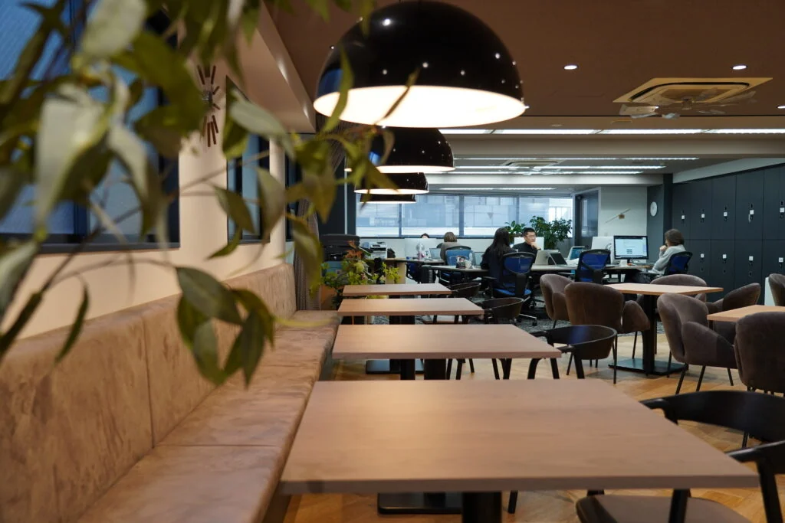
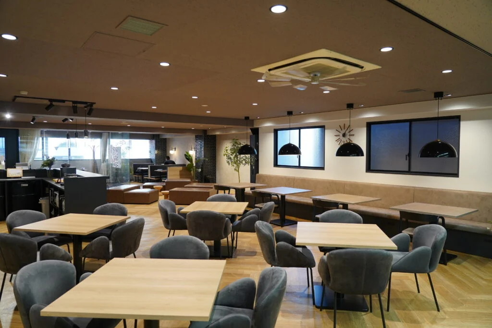
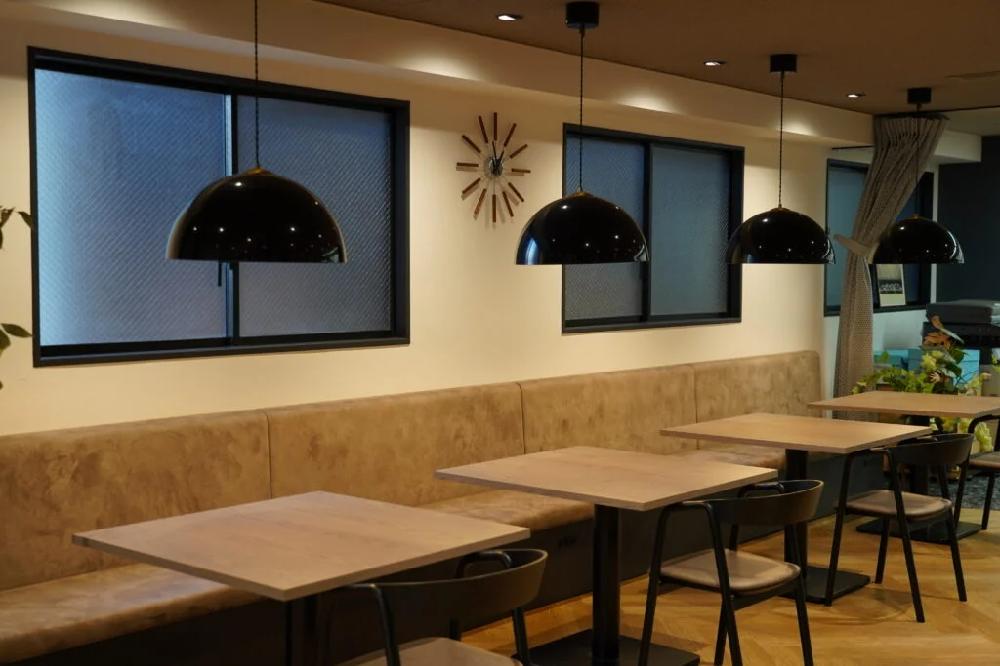

ラウンジ ／ 執務室
OUR WORK
ネットワークを
支える仕事。
社会基盤を支えるネットワーク機器、サーバ系システムの設計・構築・運用を担っています。
事業内容を見る ↗

PEOPLE
人を育てる。
OFFICE ALBUM
オフィスの風景。
写真を選んで、大きく見る。






写真出典 バチャナビ クレイスのオフィス紹介 ↗

OUR WORK
社会基盤を支えるネットワーク機器、サーバ系システムの設計・構築・運用を担っています。
事業内容を見る ↗PEOPLE
OFFICE ALBUM
写真を選んで、大きく見る。


写真出典 バチャナビ クレイスのオフィス紹介 ↗